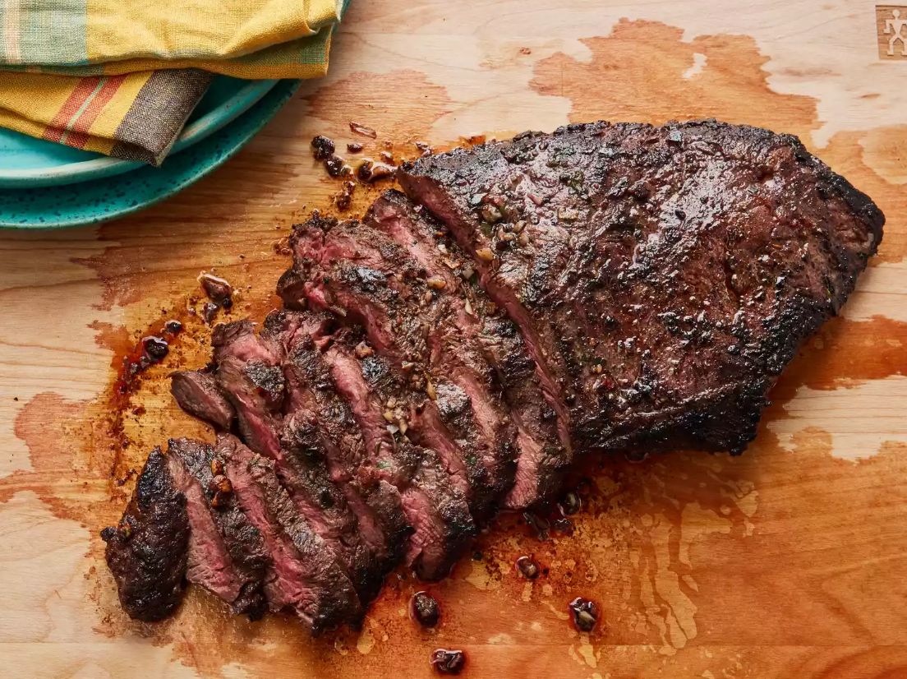

Perfect Flat Iron Steak

Description
This delicious flat iron steak was created from a combination of different recipes that I read. I combined, adjusted, and finally perfected the marinade and cooking time to my taste. I'm sure you will love it as well. After all, it is perfection!
Ingridients
- 1 (2 pound) flat iron steak
- 2 ½ tablespoons olive oil
- 2 cloves garlic, minced
- 1 teaspoon chopped fresh parsley
- ¼ teaspoon chopped fresh rosemary
- ½ teaspoon chopped fresh chives
- ¼ cup Cabernet Sauvignon (or other dry red wine)
- ½ teaspoon salt
- ¾ teaspoon ground black pepper
- ¼ teaspoon dry mustard powder
Steps
- Place steak inside a large resealable bag and prepare marinade.
- Pour marinade over steak and marinate in the refrigerator.
- Sear and cook the steak in a hot skillet.
- Discard the marinade and allow steak to rest before serving.